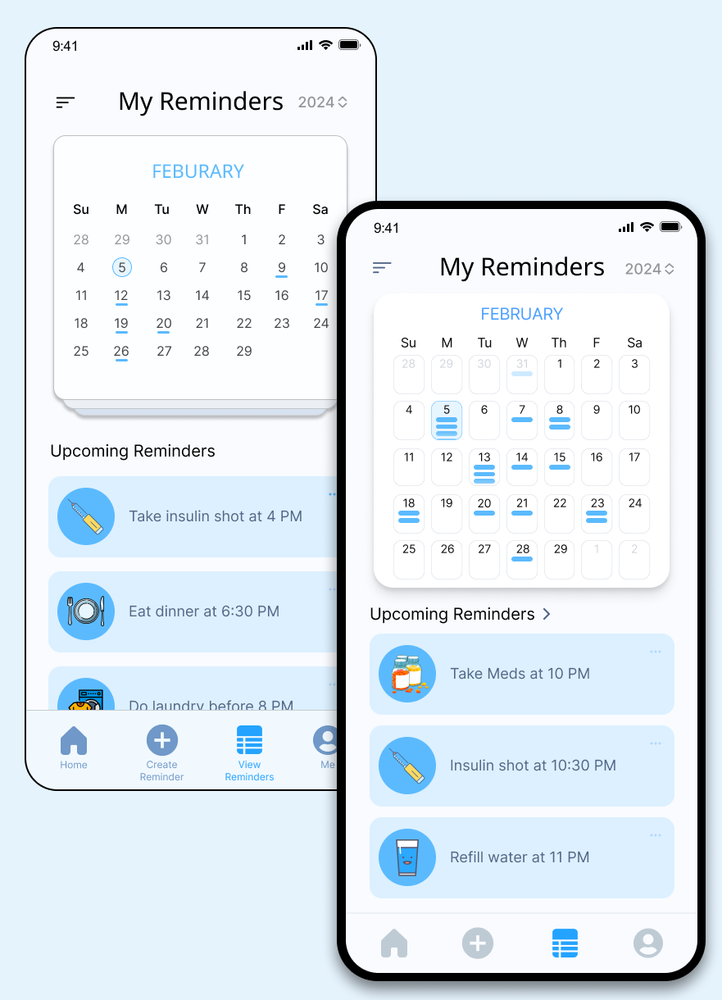
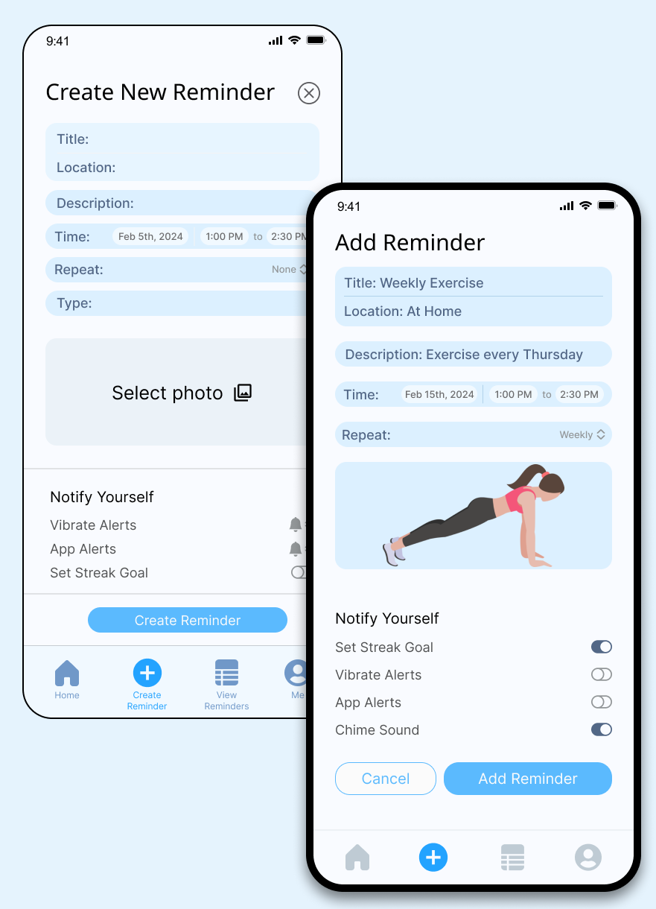
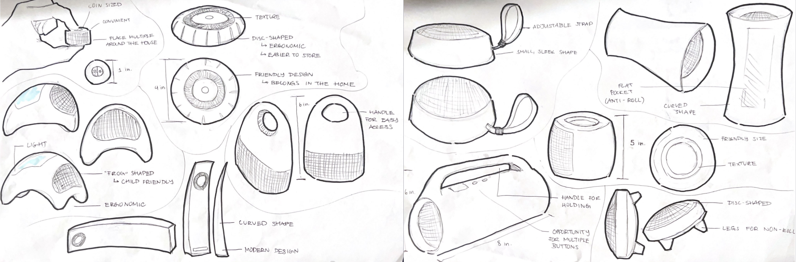

Task Tone
A digital-physical reminder system that keeps you accountable through auditory, visual, and tactile cues — designed for everyone, built around the needs of those who need it most.

Reminders fail us
This project began with my mom, who lives with hearing loss and often misses her medication reminders entirely. But as I started asking around, I realized the problem was universal — a single vibration or alarm is easy to dismiss, ignore, or simply sleep through.
I wanted to design something that goes further than a push notification. A system that earns your attention without demanding it.
How might we create reminders that work for people with sensory limitations?
What reminder patterns are actually effective, and how do they fit real routines?
How does this differ meaningfully from every other reminder app on the market?
Can a physical companion extend the digital experience beyond the phone?
What's broken about reminders today?
Hearing loss
My mom relies on auditory alerts that she simply can't hear. Her phone is often across the room — making sound-only reminders completely inaccessible.
One-tap dismissal
My dad swipes away alarms without thinking. The act of snoozing becomes a habit loop — the reminder registers, but the task doesn't.
No real motivation
Without stakes or context, notifications feel easy to ignore. There's no visual cue that something is overdue, no consequence for delay.
Phone dependency
Not everyone has their phone on them constantly. A purely cellular reminder system leaves a large gap for those with different routines.
Survey 1 — Are your current reminders less than 50% effective?
Google Calendar users
Phone alarm users
To-do list users
Reminder app users
Survey 2 — What type of reminder works best for you?
Visual reminders
Auditory reminders
Both visual + auditory
Customization is essential
Visual reminders are the most universally effective format
Dedicated reminder apps underperform compared to calendar tools
A multi-modal approach is the most inclusive path forward
Key changes
Version 1 → Version 2

Updated My Reminders & Calendar UI
Confusing add & delete reminders, strange UI inconsistencies
Calendar UI looks more familiar, added navigation for adding reminders
No navigation for 'Upcoming Reminders'
Placed a chevron for navigation to 'Upcoming Reminders'
Navigation bar takes up too much space
Simplified navigation bar (Tested: asked people to blind-guess what each icon does)

Updated Add Reminder UI
'Create New Reminder' is too long
'Add Reminder' is more concise
Too many modules on one screen, user retention is short
Consolidated modules, friendlier 'Notify Yourself' toggles
Originally placed a close icon on the upper right, create reminder on bottom
To follow UI convention, Add & Cancel button are side-by-side with contrasting UI
Main features
Add a Reminder
Flexible customization for both the app and the physical device.
Controls how often the physical Task Tone device pings you — independent of your phone
Sets notification frequency within the app, separate from system alerts
Optional recurring accountability — creates a reason to follow through, not just dismiss
Typed time entry added after user feedback found dropdowns slow and frustrating
Calendar View
A familiar structure that makes reminders easier to manage at a glance.
Mirrors existing mental models — built for quick scanning, not cognitive load
Reminders expand in place, reducing context-switching
Warning States
Three escalating nudges for overdue tasks.
Smiling at baseline, yellow at 5 min overdue, orange at 10 min — visual urgency that scales
A character that reacts to your behavior adds accountability without being punitive
Creating the form
Exploring form: traditional speaker shapes, wearable options, and standalone objects. Still unsure how portable it needed to be.

Moving away from speaker conventions toward something more tactile and companion-like — something you'd actually want to keep near you.

People want something that feels like a tool, not another piece of decorative plastic
Tactile quality signals care — soft materials read as more trustworthy
Testing squish factor and ergonomics for left and right hand use.


The form was too large — a reminder device shouldn't demand more space than it earns
Faces felt unnecessary at this stage; function needed to come first
Significantly smaller, more portable. Two sizes tested: medium-small (left) and compact (right).

"The smaller, the better, the more portable" — Classmate feedback
Both felt natural in either hand; ambidextrous design held


Small teardrop shape — friendly to touch, easy to carry
Compatible with lanyard or clip, so it stays on your person without thinking about it
From wireframe to high fidelity


What this project taught me
"I would really love for this to actually exist. Especially since my hearing is starting to deteriorate — I feel like it would help me."
My Mom · Project Inspiration"Super cool that I can use the app and the physical device together, or just one. I could see this living on my purse because of the size."
Classmate S"The process work for both the digital and physical parts was really successful. It's obvious you care deeply about who might use this."
Classmate JTakeaway
Designing for accessibility doesn't mean designing for a niche — it means designing better for everyone. Starting with my mom's specific constraints pushed me toward solutions that turned out to be more useful across the board: multi-modal feedback, customizable intensity, a form factor that stays with you. The most meaningful design constraint isn't the grid or the platform. It's the person.